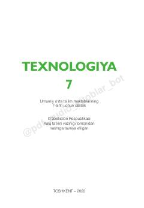

T77-sinf o‘quvchilari uchun texnologiya fanidan o‘quv qo‘llanma va darslik.
Ushbu darslik umumiy o‘rta ta’lim maktablarining 7-sinf o‘quvchilari uchun mo‘ljallangan bo‘lib, texnologiya va dizayn hamda servis xizmati yo‘nalishlari bo‘yicha nazariy va amaliy bilimlarni o‘z ichiga oladi. Kitobda yog‘och va metallga ishlov berish, elektrotexnika asoslari, oziq-ovqat mahsulotlarini tayyorlash va kiyim-kechak modellashtirish kabi mavzular batafsil yoritilgan.